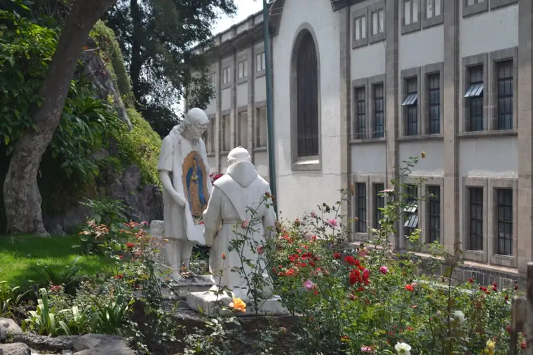
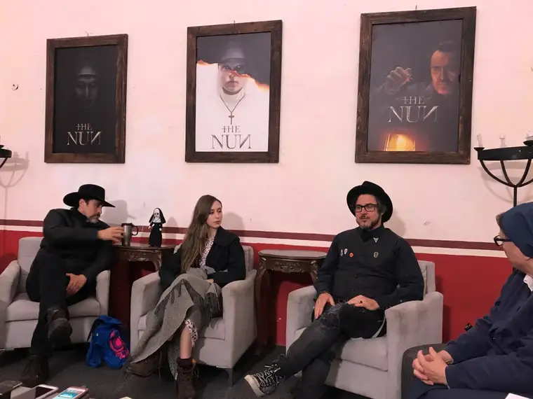
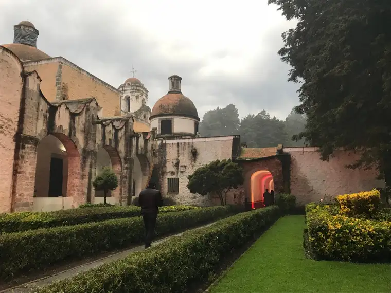
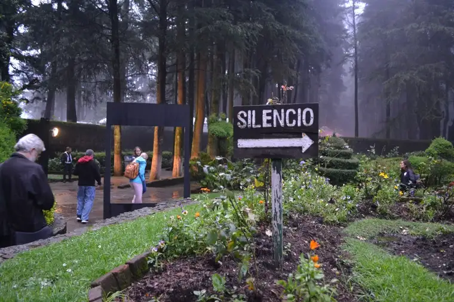
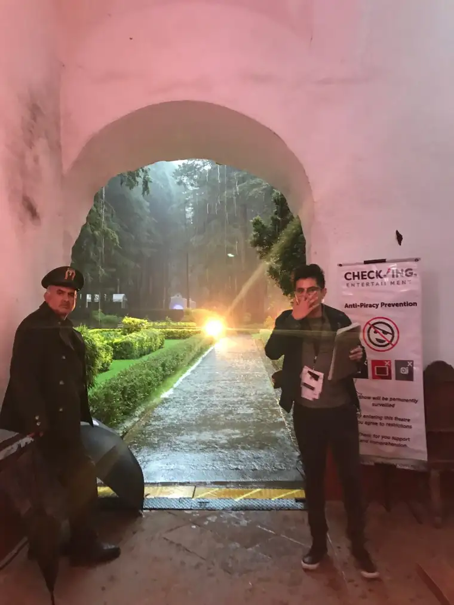
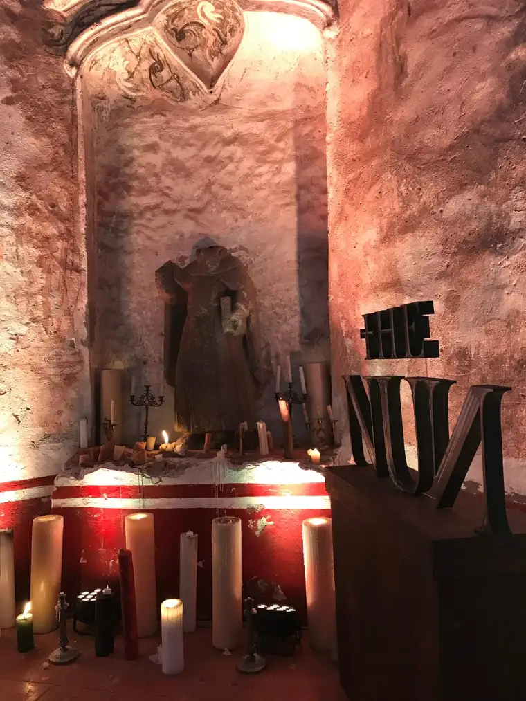

It was an honest enough question from my young friend, who’d seen some early postings on Facebook regarding my trip to Mexico City at the tail-end of August.
“Why did you go?”
I’d made it known (and most who know me would have suspected it anyway) that of the main reasons I’d decided to accept the invitation by CatholicMom.com, Grace Hill Media and Warner Bros. Pictures to be among a group of journalists previewing the horror movie, “The Nun” — fourth up in The Conjuring series — a love for horror films was not among them.
So why did I, a Catholic who tries to live her faith in the light, end up at an old, supposedly-haunted convent in Mexico viewing the kind of movie that, in the minds of some, serves only to highlight evil? To appease those wondering, I’ve pulled together the Top 10 reasons, from my perspective.
1. THE LAND OF OUR LADY OF GUADALUPE? YES PLEASE! Ever since a fellow Catholic mother in my home of Fargo, N.D., showed a group of friends a slideshow of her pilgrimage to Mexico City to visit Our Lady of Guadalupe Basilica and view the tilma — the image impressed upon a garment worn by Juan Diego in the early 1500s after Mary appeared to him — I’ve had this place on my bucket list. Though it wasn’t the primary order of business, and I wasn’t sure time would even allow for a visit to the shrine (the most frequently visited apparition site in the world), it did come to be, thanks be to God, and I can’t wait to share more soon.


2. FACING MY FEARS: Earlier this summer, I had the most terrifying airplane experience of my life, and was left wondering whether I’d ever get up the nerve again to travel by plane. This new anxiety bothered me. I wondered about the opportunities I might miss, gripped by fear. Saying “yes” to this junket would be a chance to face my fears in so many ways — my new and growing fear of flying, not to mention watching a horror film, which is not my cup of tea, and in a foreign land no less! It was a chance to go bold and not let my fears keep me from living. I’m grateful to say everything went off without a hitch! Yes, even being “dropped” into another country for a few days, one in which I knew only small bits of the language, reminded me I am not alone, that God always goes with me. I faced and conquered my fears and grew in trust. On the way there, I sensed Our Lady of Guadalupe opening her arms and ushering me to her side. It was a lovely visual that kept me peaceful and hopeful.
3. I LOVE NUNS! Those closest to me know I’ve had a long and beautiful relationship with a group of Carmelite nuns here in North Dakota. They have offered me harbor on many occasions, and given me such an appreciation for the cloistered life and its fruits. I’ll admit, the very fact that this movie was centered around a cloistered monastery intrigued me, not to mention that it would be focused on the nuns themselves. I was curious how the nuns in this movie would be portrayed — not just the evil nun whose character forms the base for the story, but the good nuns also. Especially the good nuns! Having the chance to talk with the main actress, Taissa Farmiga, who did an excellent job in her role as a grace-filled, frightened-but-courageous young novice — along with another main character and the director — was indeed thrilling.


4. THE SCANDALS ARE SCARIER: This opportunity came just as the Church scandals were beginning to break wide open. And while I don’t believe glorifying evil a worthy pursuit, these other evils in our Catholic family right now seemed so much scarier, and more horrifying, than any horror film could be. I knew “The Nun” is a fully fictional account, whereas these other situations are real; the true horror at the moment. I also figured that analyzing the film with fellow journalists and seeing behind-the-scenes glimpses could help break down the fear factor, as information and details often do — and that proved true.
5. A CHANCE TO IMPRESS MY FAMILY: While I’m not a lover of horror films, several family members — including my husband and older kids — are. I’ll admit that may have come into play in my agreeing to go. Knowing my leaving could be an inconvenience, I left the final decision up to my husband, who urged me onward. “Are you kidding? You have to!” We’re called to be in the world, but not of it. In the end, knowing some of these dear ones would likely see this film with or without my review, I decided I’d rather they hear about it from me first than leave them to tackle this culture wholly on their own. (My youngest two, 13 and 15, will not be viewing it anytime soon).
6. TURNING 50: I was a week from my 50th birthday the day I flew to Mexico City. Surely, a self-challenge figured into my decision. When you realize your life is likely more than half over, you tend to want to jump at unique opportunities while you can, and this was certainly one.
7. I LOVE CONVENTS! Knowing we’d be viewing the film at Ex Convento del Desierto de Los Leones, a former Carmelite convent in rural Mexico, provided an additional layer of intrigue. The trip to the site our two evenings there, involving traveling in a shuttle up hills on treacherous roads in the rain, proved to be every bit as scary as the film itself. The convent grounds, however, were absolutely stunning, and our trip through the catacombs, memorable. I wouldn’t have wanted to miss this rare chance to glimpse this gem. Though it’s hard to find information about the convent in English, I enjoyed this blogger’s rendition of her visit.


8. FELLOWSHIP: I absolutely loved the chance to view this film with fellow media folks. As part of the faith-based bunch, I felt very “safe” knowing I would not be alone, and there would be plenty of discussion and analysis afterward with others who see things from a faith perspective. I am especially grateful that God saw fit to pair me with the only religious sister on the adventure, Sister Rose Pacatte, a more seasoned film critic, who brought along holy water that she sprinkled in the viewing room the evening we watched “The Nun” together.

9. FOOD: I will never turn down an offer to experience new foods, and Mexico City definitely served up some scrumptious treats.
10. AN INVITATION: At the first mention of an the invitation to a film junket, I checked the dates, even before knowing which film would be highlighted. Surprisingly, my schedule was clear those days only. When the film’s name was revealed, I felt initial conflict, knowing embarking on this adventure might confuse some because of my faith. But also because of that faith, and the light that burns in my heart, I sensed there would be blessings I’d be denied by saying no. I’ve learned to be discerning, but also to err on the side of adventure and an openness to new experiences. This one did not disappoint!

So, there you have it — why I went. As far as my take on the “The Nun” film, which opens in theaters this week, for now, let me say it takes place in a Catholic setting, which might be of interest to some of my fellow Catholic friends. If you are inclined toward the horror genre — some are as a way to gain a sense of control over the evil in our world — go see for yourself. It is terrifying and revolting in moments, so be prepared to close your eyes if you’re sensitive to strong visuals. In fact, if you normally wouldn’t seek out such a film, I don’t suggest you do. But know that if you go, you’ll find a satisfying, quite triumphant ending — a real good-over-evil moment. Either way, I hope you will enjoy hearing about my experiences from a Catholic perspective. Stay tuned for more in the coming weeks.

Q4U: What are your thoughts on horror films and why some are drawn to them? Where do you draw the line in the movies you choose to view? Do you plan on seeing “The Nun?”